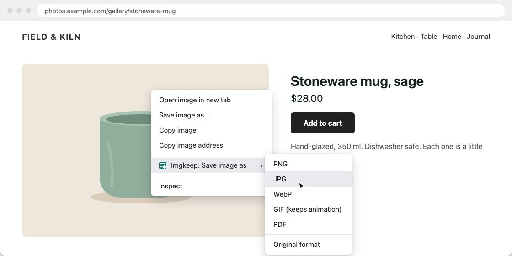

Chrome saves images as JFIF? How to get JPG
Short answer
A .jfif file is a normal JPEG with a different ending. Chrome and Edge on Windows take the ending from a Windows registry setting, and on some PCs it says .jfif. Rename the file to .jpg, which is safe, change the setting once in the registry, or save with an extension that names the file .jpg itself.
Updated
What is a JFIF file?
JFIF is one of the standard ways a JPEG image is stored, and many .jpg files on your computer are JFIF inside. So a .jfif file isn't a strange new format. It's a normal JPEG with an unusual name, which some apps and upload forms don't recognise.
Why does Chrome save JFIF instead of JPG?
When you save an image, Chrome asks Windows which file ending goes with the type the site sent (image/jpeg). Windows looks it up in the registry. On some PCs the answer is .jfif instead of .jpg, often after an update or after installing a program that changed it. Microsoft Edge reads the same setting, so it does the same thing. Macs aren't affected.
If you get a .webp file instead, that's a different problem: the site sent WebP. See why Chrome saves images as WebP.
How do I change one file to JPG?
- Make file endings visible. In File Explorer on Windows 11, choose View › Show › File name extensions. On Windows 10, tick File name extensions on the View tab.
- Right-click the file, choose Rename, and change
.jfifto.jpg. - Windows warns that the file might become unusable. Choose Yes. It won't: it was a JPEG all along.
You can also do it while saving: in the Save as window, change the ending of the name to .jpg before you click Save.
How do I stop Chrome saving JFIF for good?
Change the registry setting Chrome reads, so every JPEG you save gets .jpg again. Only do it if you're comfortable editing the registry, because a wrong change elsewhere can cause problems.
- Press Win+R, type
regeditand press Enter. - Go to
HKEY_CLASSES_ROOT\MIME\Database\Content Type\image/jpeg. - Double-click Extension and change its value from
.jfifto.jpg. - Close the Registry Editor and restart Chrome (or restart Windows).
If .jfif comes back after an update or a new program, repeat the steps.
Can I save as JPG directly?
Yes. An extension that saves images in a format you choose names the file itself, so the registry setting doesn't matter. It runs in your browser, so pick one you can trust (how to check an image extension is safe). Here's how it works with ours.
Our extension
Imgkeep
- Add Imgkeep to Chrome from the Chrome Web Store.
- Right-click the image and choose Imgkeep: Save image as.
- Pick JPG. Imgkeep names the file with a
.jpgending.

The same menu turns WebP and AVIF images into JPG or PNG, which a .jfif fix can't do. You can also save to a folder you pick and set your own file names. Conversion happens on your computer; nothing is uploaded. Free and open source.
Related guides
- Why Chrome saves images as WebP
- How to save WebP as JPG or PNG
- How to save AVIF as JPG or PNG
- How to save an animated WebP as a GIF
- How to save an image as a PDF in Chrome
- A safe alternative to Save image as Type
- When right-click won't save an image
- How to get an image from the web into Canva, Figma or Google Slides
Questions
Is a JFIF file the same as a JPG?
Yes. JFIF is one of the standard ways a JPEG image is stored, and many .jpg files are JFIF inside. Either way, a .jfif file is a JPEG. Only the ending of the name is different.
Is it safe to rename .jfif to .jpg?
Yes. The file is already a JPEG, so renaming it doesn't change or damage the image. That's not true for WebP: a .webp file renamed to .jpg is still WebP inside (how to convert WebP properly).
Does this happen on a Mac?
No, it's a Windows problem. The .jfif ending comes from a Windows registry setting that Chrome and Edge read when they name a downloaded JPEG.